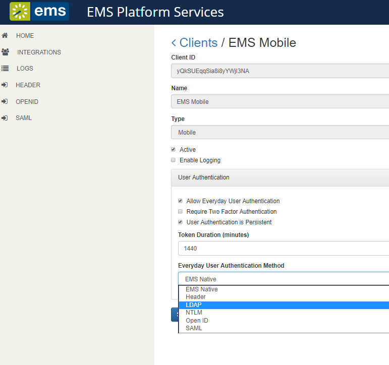
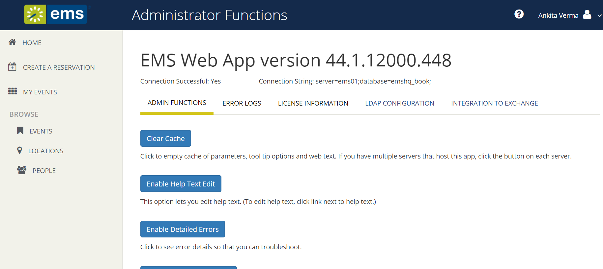

Follow the steps in this section to authenticate your users via the Lightweight Directory Access Protocol (LDAP). After successful connection to the platform API, the user will log in following the scenario below:
If the credentials are missing when the user taps Sign In, an error message will display stating that fields are required. If the platform API is unable to verify the credentials, the mobile app will inform the user based on that response.
To use LDAP authentication, you will need to:


Tip: This is the same process you use for authenticating
************************************************
Lightweight Directory Access Protocol (LDAP) is an application protocol for querying directory information. The LDAP Authentication method provides single-sign-on capability using your organization’s LDAP environment and can be used in both intranet and internet deployments of EMS Everyday applications such as EMS Web App and EMS Mobile App.

This topic covers the following topics related to LDAP configuration:
When a user logs into EMS Web App or EMS Mobile App with their User ID and Password, their credentials are authenticated against LDAP and compared against corresponding user information recorded in the Network ID and/or External Reference fields of your EMS Everyday User records. If a match exists, the Everyday User will be logged in to the application, inheriting any Everyday User Process Template rights to which their LDAP Group has been assigned.
|
|
Notes:
|


|
|
Note: The other tabs (Communication Options, Core Properties, Non-AD Config and LDAP Queries) should only be edited with assistance from our Support Department when special circumstances arise with unique configurations of LDAP. |
|
|
Warnings: It is recommended that this tab only be edited with assistance from our Support Department when special circumstances arise with unique configurations of LDAP. If you’re not familiar with the LDAP settings, it is highly recommended to get the assistance of a System Admin in your organization who is familiar with the LDAP settings. |
The Communication Options tab includes fields that define how to fetch a Group or a User when sending communications from the EMS Desktop Client. You can also set the SSL configurations, including the Security Certificate Path. Checking the Use SSL box will force communication to use SSL.
Example: (&(objectClass=Person)(SAMAccountName={0})) or (&(objectClass=Person)(uid={0}))
Top of Form
Example: (&(objectClass=Person)(objectClass=user))
Bottom of Form
|
|
Warnings: It is recommended that this tab only be edited with assistance from our Support Department when special circumstances arise with unique configurations of LDAP. If you’re not familiar with the LDAP settings, it is highly recommended to get the assistance of a System Admin in your organization who is familiar with the LDAP settings. |
Top of Form
Indicate whether your LDAP implementation is Active Directory. These properties are set to the common defaults, but can be changed here if the LDAP properties differ from the defaults displayed.
|
|
Warning: It is recommended that this tab only be edited with assistance from our Support Department when special circumstances arise with unique configurations of LDAP. If you’re not familiar with the LDAP settings, it is highly recommended to get the assistance of a System Admin in your organization who is familiar with the LDAP settings. |
Top of Form
If your LDAP implementation is not Active Directory, use these fields to redefine the LDAP property names used when searching directory information.
Example: If sameaccountname=xxxx, then enter sameaccountname
Example: cn={0},ou=staff,o=yourdomain
Example: If filter should be objectClass=groupOfNames, then property should be groupOfNames
Example: If member property is member=jdoe, then property should be member
|
|
Warning: It is recommended that this tab only be edited with assistance from our Support Department when special circumstances arise with unique configurations of LDAP. If you’re not familiar with the LDAP settings, it is highly recommended to get the assistance of a System Admin in your organization who is familiar with the LDAP settings. |
These are LDAP query overrides to fetch Groups and Users from the domain. These settings rarely need to overridden, but can be used to customize queries.
Bottom of Form
|
|
Note: If you want Everyday Users to inherit Everyday User Process Templates based on the LDAP Group(s) with which they belong, proceed to Step 7. Otherwise, you have completed the configuration process. |

****************************************
Assuming you have installed the EMS Platform Services e.g. https://yourcompany.com/ems-platform-api, then you can test the configuration with a simple curl command:
Tip: You can also use the API's Swagger interface to accomplish this goal.
You should see a portion of the JSON response that looks like this (unrelated details omitted for brevity):
{
...
"additionalProperties": {
"authConfig": {
"activities":"ldap" // <-- these are the critical lines
"ui":"ldap"
}
}
}
Assuming you have installed the EMS Platform Services API at https://ems.yourcompany.com/endpoint, you can test the authentication with a simple curl command:
curl -X POST -H 'x-ems-consumer: MobileApp' -H 'Content-Type: application/json' -d '{"username":"your_username", "password":"your_password"}' https://ems.yourcompany.com/endpoint...authentication
...where your_username and your_password are your credentials.
Note: api/v1/authentication is the endpoint within the API where your request must be sent.